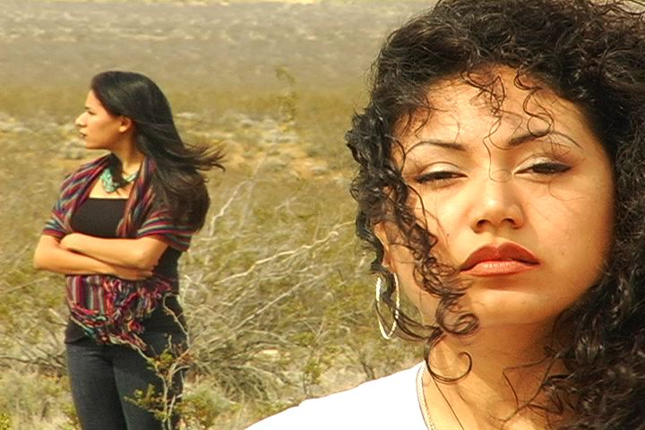
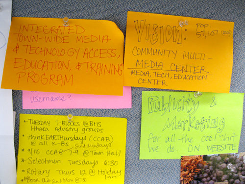
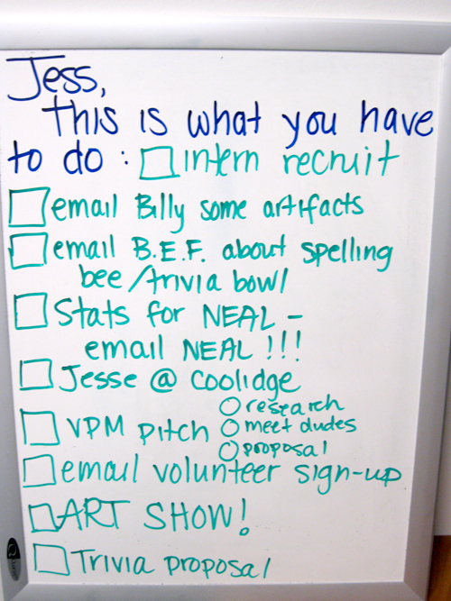

Media Literacy Critical in Today’s Schools
John Urkevich, Executive Director of Cooperating School Districts of Greater St. Louis, Inc. discusses the need for media literacy training in schools:
In 2010, employers are stressing the importance of not only being technology savvy, but also media literate. One of the biggest challenges in media literacy is to locate and evaluate information and recognize and understand the source. The ability to clearly focus on content and ignore the distractions of the media is critical in our world today.
Cooperating School Districts of Greater St. Louis is proud to support educators in becoming both technology literate and media literate. In turn, students in St. Louis schools are using media literacy skills to create their own multimedia projects while gaining a better understanding of the media that surround their daily lives.
CSD recognizes the importance of media literacy and the role it plays in helping students develop skills including critical thinking, problem solving and story telling. In addition, we are a member of the Gateway Media Literacy Partners (GMLP). Media education, with critical thinking, creative communication, and technology literacy is a key part of a 21st century approach to learning.
We have been richly discussing this point at the Transmission Project: not only do people need to know how to use technology and create media, but they also need to know the context and motivations behind it as well.
*AccessU West*
When:
January 11, 2011 - January 12, 2011
Where:
San Jose, CA The digital divide includes the tech design divide that keeps people who are using assistive technology or who have disabilities from being able to use web sites, software and other tech tools.
If you agree, you should check out *AccessU West* - a web accessibility institute (previously CalWAC) *January 10-12, 2011* in San Jose, California. It’s being organized by Knowbility.org, that’s focused on helping people with disabilities get access to technology and tech-related education, as well as making education accessible through technology.
AccessU West offers classes on how to make electronic information technology accessible to everyone – including people with disabilities. This event is for web developers, web designers, IT Managers, IT policy
developers, IT administrators, programmers, anyone with IT
responsibilities, or IT students.
*This is a tremendous professional development opportunity for individuals, as well as a way for companies to demonstrate their commitment to usability and accessibility to customers!*
* Does your organization believe its web site should be accessible to ALL people?
* Is your company ready to comply with the pending expansion of the Americans with Disabilities Act that will ensure people with disabilities have full access to the Internet and television?
* Are you a developer or designer who wants to understand emerging best design practices for the web? Are you a web developer, web designer, IT manager, IT policy developer, IT administrator or programmer that wants to be even more attractive to potential employers?
* Do you want to build innovative AND accessible websites using cutting-edge CSS techniques?
* Do you want to learn how accessibility ties into your usability goals?
Attendees will engage with world renowned accessibility experts to improve design skills and to understand the both the need and the techniques for inclusive IT design – from the basics to the bleeding edge.
Attendees can choose one, two or three days of workshops. A Usability Track is available as well, as is a group discount for six or more people).
Complete information:
http://www.knowbility.org/accessu-west/
Broadband is an investment in people
From the Broadband Commission for Digital Development’s report calling for leadership in developing broadband for all:
Investing in broadband is not necessarily an investment in infrastructure, but rather an investment in people. For broadband is really an investment in an interconnected world of ideas and knowledge that can be spread in seconds from one corner of the earth to another — the “meeting and mating of ideas to make new ideas.” And investing in people and their ideas to solve their own problems contributes more to empowering those people and making progress in the global development agenda than virtually anything else policy-makers can do.
via Marnie Webb.
Digital Media and Learning Conference
When:
March 3, 2011 - March 5, 2011
Where:
The Hilton in Long Beach, CA The Digital Media and Learning Conference is an annual event supported by the MacArthur Foundation and organized by the Digital Media and Learning Research Hub at University of California, Irvine. The conference is meant to be an inclusive, international and annual gathering of scholars and practitioners in the field, focused on fostering interdisciplinary and participatory dialog and linking theory, empirical study, policy, and practice.
The second conference will be held between March 3-5, 2011 at the Hilton Long Beach Conference and Meeting Center in Long Beach, California. The theme will be “Designing Learning Futures.”
Digital Arts Service Corps Spotlight
Leticia Miranda is a California-born and raised Chicana with roots in Arizona and Texas. Before joining the Digital Arts Service Corps Leticia covered immigration, prison reform and juvenile justice for Colorlines Magazine and produced a woman of color-centered radio program at KZSC in Santa Cruz. Aside from print and radio, Leticia has a new passion for filmmaking thanks to the Queer Women of Color Media Arts Project in San Francisco, CA. Her film, “Con Una Lengua que No es Mia”, has been featured in the Queer Women of Color Film Festival and Frameline Festival. She hopes to one day become an unstoppable media-making machine.
At the Media Literacy Project in Albuquerque, New Mexico Leticia is now producing videos that tackle broadband access specifically in Latino communities. The Digital Arts Service Corps can be a perfect fit for passionate and committed individuals like Leticia, and we look forward to following her media work in the future.

| Attachment | Size |
|---|---|
| spotlight4.jpg | 722.84 KB |
{kind=link}
Revisiting Honest Practice
Looking back through my writings about honest practice, I came across this piece originally published in the
“You can’t copy your way to the top.”
This “meta lesson” from The Contrarian’s Guide to Leadership struck me when advising a colleague on a grant that wanted applicants to document the use of “best practices” in their proposed project. The real kick was that the funder was only interested in new projects and proclaimed to support innovation.
My mind reeled. If “best practices” are the standards of excellence within organizations considered high performing, how can it be expected that those standards could be immediately implemented in startup programs? What of differences in organizational culture and constituencies, not to mention technical and information systems? Is innovation supported if funding follows conventional wisdom? How do we know that wisdom is valid when our industry is trained to share only the lessons of success and not of failure?
Organizations need support not just in their success, but also in their mistakes. Since the funding community is unlikely to be first jumping on this bandwagon, I propose cultivating space to learn from the honest practices we experience every day. Encourage reflection on reality when possible.
Snapshots from the field

Corps member Jessica Wholey gives us a snapshot into her process while working at Brookline Access Television. Jessica is building capacity at BATV this year through outreach, media and technology training, grant writing, volunteer recruitment and website development.

| Attachment | Size |
|---|---|
| jw1.jpg | 245.59 KB |
| jw2.jpg | 363.3 KB |
{kind=link}
{kind=link}
Allied Media Conference 2011
When:
June 23, 2011 - June 26, 2011
Where:
Detroit, MI
Website:
http://alliedmediaconference.org/ The 12th annual Allied Media Conference will be held June 17-20, 2010 in the McGregor Conference Center (495 Ferry Mall) on the campus of Wayne State University in Detroit.
The Allied Media Conference is the central project of the Allied Media Projects (AMP) network, which emerges out of ten years of organic relationship-building. Since the first conference (then the Midwest Zine Conference) in 1999, people have been compelled by the concept of do-it-yourself media. Later, as the Underground Publishing Conference, the emphasis was on building a movement of alternative media makers. With the shift towards Allied Media, the AMC has attracted more and more people who are interested in using participatory media as a strategy for social justice organizing.
140 Conference: Small Town
Where:
Hutchinson, KS
Website:
http://smalltown.140conf.com/ Since the launch of the #140conf events, conferences have taken place in a number of BIG cities including: New York City, Los Angeles, London and Tel Aviv.
At these events we have explored the effects of twitter on a wide range of topics including: Celebrity, “The Media”, Advertising, Politics, Fashion, Real Estate, Music, Education, Public Safety, Public Diplomacy and quite a few other topics. #140conf Small Town will be a ground breaking opportunity to look at the effects of the real-time web on the people and the businesses inside of and around Small Towns. I thank Becky McCray for being the inspiration behind this event and for her help and leadership in making this event happen.
How do you define “small town”?
While we could set a dividing line of population, we aren’t going to. We mean to include small towns and rural areas, outlying suburbs and exurbs. Plus, plenty of people who live in a big city have some important small town connection, whether that’s where you grew up, where you plan to move, where your parents came from, or where your clients are.
If you are excited about small towns and want to be part of the discussion, we want you to join us.
Blandin Broadband Conference
When:
October 13, 2010 - October 14, 2010
Where:
Baxter, MN This year’s Blandin Broadband Conference spotlights communities across Minnesota that are Cultivating a Culture of Use through ARRA broadband funding. Their goal is ambitious - to create technologically and economically vital rural communities, competing and thriving in the broadband economy, with sustainable broadband adoption, job growth and wealth creation.
We will hear from experts, researchers, students and folks in the field who are creating programs to help boost broadband use in their communities. We will also have time and space for attendees to ask questions and tell their stories, and follow up on the work of the Minnesota Ultra High-Speed Broadband Taskforce to answer the question, “Where are we now - one year later?”